We're going to Japan! 🇯🇵
April 13–21, 2027
Tap where you want to go
Our flights
Our days
📋 More info (steps, labels, flight notes)
All the steps, in order
- Done: Dragon Inn Tokyo booked ✓ Confirmed
- Done: All passports valid ✓ Confirmed
- Now: Ask the host about early bag drop (Apr 13) and the 4:45 AM checkout (Apr 21). To verify
- Early Dec 2026: Contact Attic Tours SM City Cebu; gather PSA + employment papers. To do
- Jan 13–22, 2027: Lodge visas, target Mon Jan 18 (everyone except Brian). To do
- After approval (Feb): Book Dumaguete ⇄ Cebu flights for 5. To book
- March 2027: Checked baggage, travel tax ₱1,620, travel insurance, Klook bookings. To pay
- Apr 10–12: eTravel QR (within 72 h of the flight). Required
Flight notes
Check: the second ticket shows the 21 Apr return. If Dunn Lee & Jane fly home on Apr 22, confirm their separate return flight.
What the little labels mean
- Confirmed Paid and booked. Only the flights so far.
- Suggested Our recommendation, not booked.
- Estimated Planning number, can change.
- To verify Needs a check with the official source or the host.
- To book Someone needs to reserve or pay.
- Verified Checked against an official or primary source on Nov 11, 2026.
Saving: ticks and notes save only on your own phone or laptop. Mabs keeps the official version.
Countdown checklist
Official links: eTravel (etravel.gov.ph) · Visit Japan Web · TIEZA travel tax · Last checked Nov 11, 2026.
Japan visa, the simple version
⚠️ Passport rule: no trips abroad while applying
Attic Tours and the Japan Visa Centre keep your passport while the visa is processed. From the day we lodge (about Jan 18) until the passport is back (about early–mid Feb), don't book any international trip. Domestic flights are fine with a government ID.
Step by step
| When | What we do |
|---|---|
| Early Dec 2026 | Message or call Attic Tours SM City Cebu. Ask: (1) service fee per person, (2) appointment or walk-in, (3) their January lodging schedule, (4) can the Dumaguete folks submit by courier or through one person, (5) any document they want extra. |
| December 2026 | Get PSA birth certificate (and marriage certificate if married), Certificate of Employment or business papers, ITR. Take 4.5 × 3.5 cm white-background photos. |
| Jan 4–12, 2027 | Get a fresh bank certificate. Print the Dragon Inn booking and the flight itinerary. Re-confirm the drop-off day with Attic. |
| Mon, Jan 18, 2027 | Submit everything at Attic Tours SM City Cebu and pay their fee. Passports stay with them from here. |
| About early–mid Feb | Passports come back with the visa (several weeks, no guaranteed date). |
| Right after approval | Book Dumaguete ⇄ Cebu flights for 5 (Sharol is in Cebu, so not her). |
Why not earlier than Jan 13? The visa is valid for 3 months from the day it's issued, so applying too early could make it expire before our trip.
How much it costs (per person)
| Japan visa fee | ₱0 | Free for Philippine passport holders (Embassy of Japan) |
| Attic Tours service fee | Ask Attic | Not published; ask in December and update here |
| PSA certificates | ≈ ₱155–₱365 each | Walk-in vs online delivery (estimate) |
| Bank certificate | ≈ ₱100–₱300 | Depends on the bank (estimate) |
| Visa photos | ≈ ₱100–₱150 | Estimate |
| Trip to SM City Cebu (Dumaguete folks) | Depends | Skip if Attic accepts courier or one person submitting for the group |
| Total | About ₱500–₱800 + Attic's fee (+ travel to Cebu if needed) | |
Attic Tours SM City Cebu: 2nd Level, North Reclamation Area, Mabolo, Cebu City · (032) 239-8435 (phone from published guides; confirm on their site). Nothing is booked from this page.
Documents checklist
Pick your situation. Ticks save on this device only.
Dragon Inn Tokyo · Booked ✓
Dragon Inn Tokyo: 4-bedroom Japanese-style house ↗
- Bedroom 1 · 2nd floor: Mabelle & Brian
- Bedroom 2 · 2nd floor: Sharol
- Bedroom 3 · loft: Eman
- Bedroom 4 · 1st floor: Dunn Lee & Jane
- Station
- 2 min walk to Keisei Horikiri-Shobuen (Keisei Main Line: Ueno about 15 min; trains toward Narita)
- Nearby
- Convenience stores, supermarket, 100-yen shop, restaurants (host) · map ↗
- Wi-Fi
- High-speed fiber + pocket Wi-Fi to take out
- Bathrooms
- 2 full bathrooms, each with a shower ✓ (host confirmed)
- Stairs
- Yes, stairs inside. Carry big suitcases up only if needed; heavy bags can stay on the 1st floor.
- Extras
- Washer · kimonos/yukata to try on · no shoes inside
- Private
- Address, door code and booking reference stay in the Airbnb app, not on this page.
Dunn Lee & Jane after Apr 21
They'll book their own place for any nights after the group checks out on Apr 21. Not part of the group budget. Their own booking
How we chose · other homes we compared
Airbnb, whole home, Apr 13–21, 2027, 6 adults, 3+ bedrooms, 2+ baths, checked Nov 11, 2026. Ranked by: real enclosed bedrooms → 2 full bathrooms → stairs/elevator → station → price. Kept for reference only.
Your Airbnb wishlist, checked against our rules
| Listing | 8 nights | Verdict |
|---|
Close, but they missed a must-have
| Listing | 8 nights | Why not |
|---|
Day by day Suggested
🌸 Will there be cherry blossoms? (+ how this plan works)
Mt. Fuji day trip · Saturday, April 17
Klook bus day tour ↗
"Mount Fuji Internet-famous Attractions One-Day Tour" · 4.8 ★ (33.6K reviews) · departs Tokyo Station or Shinjuku
Stops: Chureito Pagoda (Arakurayama), Honcho-dori "ladder town" street, Oshino Hakkai springs, Lake Kawaguchiko, the famous Fuji-view Lawson.
≈ ¥8,000–9,000. Price varies by date. Lunch usually not included.
Private van tour ↗
Klook private driver-guide tours, door to door
Our own pace and stops. One 2026 review lists about US$417 per vehicle, so about US$70 each for 6. Good if we want hotel pickup and fewer crowds.
Compare 2–3 listings; check seats for 6 + bags.
DIY by highway bus
Busta Shinjuku → Kawaguchiko Station, about 1 h 45 min
¥2,200 each way + local retro buses. Cheapest, but we handle timing and transfers ourselves.
Plus small fees at stops.
Food on Fuji day
- Lunch (hidden gem): Yoshida udon, Fujiyoshida's own super-chewy udon with horse-meat or beef and cabbage, usually under ¥500 a bowl. Our pick: Tsuruya Shokudo ↗, a tiny family shop for about 70 years. Backups: Higashi-ura ↗ (inside a home) or Horibata Udon ↗ (in a quiet neighborhood). Bring cash, go before 12, and expect a Japanese-only menu; point at photos or say "niku udon".
- Dinner back in Tokyo: tours return to Shinjuku, so eat at Omoide Yokocho ↗ (tiny yakitori bars) or Fuunji tsukemen ↗.
Snow day: GALA Yuzawa (Niigata)
Your pick: Sunday, April 18
- From our house, board at Ueno, not Tokyo Station: Keisei from Horikiri-Shobuen to Keisei Ueno is ≈15 min, then the same Shinkansen. Shinkansen straight to GALA Yuzawa Station, which is inside the ski center. About 75–90 min. Reserved seat about ¥7,010 each way. Not every train stops there; some end at Echigo-Yuzawa (shuttle to resort).
- Sunday notes: weekends are busier, so book Shinkansen seats early. Fuji (Sat) and snow (Sun) are two early starts in a row, so Monday is planned lighter. GALA is the easiest real-snow spot from Tokyo: the train stops inside the ski center.
- Book on Klook: GALA Yuzawa packages ↗ (gondola, rentals, some with Shinkansen). Pick a date-flexible or free-cancellation one.
- Cheapest way (for snow play, no skiing): buy the round-trip Shinkansen yourself (≈¥14,000) + a gondola-only ticket at GALA (¥3,500 last season) + rent sled/boots there. Shinkansen + gondola packages start around ¥20,600, so they only save time, not money. A highway bus is cheaper but takes much longer and stops in Yuzawa town, not at GALA. The JR Tokyo Wide Pass (3 days) isn't worth it unless we use JR a lot on the other 2 days.
- Last train from GALA may leave mid-afternoon in late season (about 15:56 in late April 2025). Check the timetable.
What's confirmed vs. history
- To verify 2026–27 ski season is planned Dec 19, 2026 – May 5, 2027, subject to snow (reported from GALA's announcement). South Area closed all season.
- History In spring 2026, snow melted early: ski runs ended April 12, 2026, but gondola sightseeing ran until May 6. The "Snow Play Package" wasn't offered that season; visitors bought a gondola ticket and rented a sled and boots on site.
- Last season prices Gondola + Barouche sightseeing lift ¥5,000; gondola only ¥3,500; sled rental about ¥2,000; boots about ¥1,000–¥2,000. Non-skiers can't use ski runs; sledding is only in the snow-play park.
- To verify A bundle (gondola + wear + boots + sled) is listed by a reseller for Dec 12, 2026 – May 5, 2027, about US$101, free cancellation until the day.
Snow day budget & backup
| Shinkansen round trip | ¥14,020 |
| Gondola + lift | ¥5,000 |
| Sled + boots rental | ¥3,000–¥4,000 |
| Rental jacket/pants (if needed) | ≈ ¥4,000–¥6,000 |
| Lunch | ¥2,000 |
| Total per person | ≈ ¥28,000–¥31,000 (≈₱11,200–₱12,400) |
Wear: waterproof jacket and pants, gloves (waterproof, not knit), warm socks, beanie, sunglasses (snow glare), boots with grip. Renting the jacket/pants and boots there beats buying gear we'll use once.
Go/no-go: GALA posts if it's open on its official site at 6:00 AM. Check the night before and that morning. Buy flexible or refundable tickets.
Backup if no snow: make Sunday a relaxed Tokyo day (Ueno Park, Yanaka old town, or teamLab) and drop the Shinkansen cost.
Food: lunch at the GALA ski-center food court (Cheers / Cowabunga). Dinner around Ueno Station when we get back, then Keisei home.
📸 The TikTok photo spots: where they are
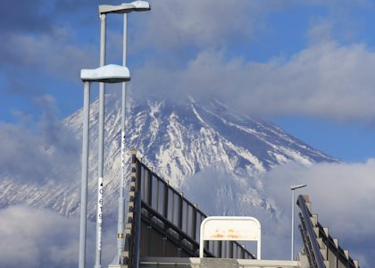
The stairs that look like they lead up to Fuji, and the bridge road facing it. Where: Route 139, Tadehara, Fuji City, Shizuoka (south side of Fuji, not Kawaguchiko). Best shot: from the south side of the staircase, or on the bridge sidewalk. Go early on a clear day.
Please stay on the sidewalk and stairs: don't cross into the road or median, keep quiet, take trash home. Locals have complained and the city put up fences.
📍 Map ↗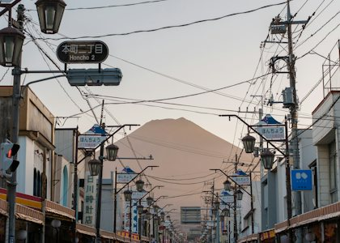
Fujiyoshida's streets line up with Mt. Fuji. The famous one is Honcho-dori (Honcho 2-chome); quieter back streets near Gekkoji / Shimoyoshida stations have the same look. Best shot: from the sidewalk where the road curves, morning light.
Never stand in the road for the photo. Wait for the green light at crossings.
📍 Map ↗Fuji right across the water with a wooden lakeside fence. Where: north shore of Lake Yamanaka (Yamanakako), around Nagaike Shinsui Park, the classic viewpoint with a lakeside walking path. Swans live here too.
📍 Map ↗Fuji only shows on clear days, and mornings are clearest. Times between stops are estimates.
Kyoto (optional)
Who goes is still open: any of us, or the whole group. Anyone who stays follows the normal plan (Harry Potter + Shibuya on Apr 15, Asakusa on Apr 16). You meet again at Dragon Inn on the night of Apr 16. Big luggage stays at the house; bring a small overnight bag.
Hotel options · Thu Apr 15 → Fri Apr 16 To book
Near Kyoto Station. Prices are for 2 rooms (3 people) as an example; check again once we know how many are going. Prices seen on Booking.com on Nov 13, 2026, all with free cancellation. Prices change daily; check before booking. Dragon Inn is already paid for this night, so this is an extra cost.
Pocket money for Apr 13–21
How much to bring per person for spending in Japan. Flights and the house are already paid, so they're not here. Kyoto side-trip costs are on the Kyoto page.
What it's for
Change any amount (¥ per person). It saves on your own phone only.
Rate: ₱1 ≈ ¥2.50 (mid-market, Nov 2026). Your bank or card will give a little less. All amounts are estimates.
💡 Cash or card?
- Bring about ¥30,000 cash to start. Small shops, temples and some food stalls are cash only.
- Use Suica for trains, konbini and vending machines.
- Use a card for big buys (Don Quijote, Uniqlo, tours). Show your passport for tax-free.
- 7-Eleven ATMs take most foreign cards. If it asks to "convert to PHP", choose No.
Who owes Mabs
Tap your name
Pick your name to see what you owe.
🔍 See how we computed this
🏠 Stay: Dragon Inn, 8 nights, ₱73,410 ÷ 6 people = ₱12,235 each.
✈️ Ticket: booked Nov 8, 2026 with Mabs & Brian. ₱31,002.36 ÷ 3 = ₱10,334.12. Baggage not included.
| Base fare | ₱2.00 |
| Admin fee | ₱1,100.00 |
| Fuel surcharge | ₱5,742.00 |
| Cebu airport fee (international) | ₱870.00 |
| Cebu airport fee (domestic) | ₱60.00 |
| Japan tourist tax | ₱1,198.11 |
| Japan security fee | ₱279.56 |
| Japan airport facilities fee | ₱982.45 |
| PH government service charge | ₱100.00 |
| Total | ₱10,334.12 |
🔍 See how we computed this
🏠 Stay: Dragon Inn, 8 nights, ₱73,410 ÷ 6 people = ₱12,235 each.
✈️ Ticket: your own booking, Nov 8, 2026. Baggage not included. The base fare (₱7,398) is higher than the promo fare on the other booking; all other fees are the same.
| Base fare | ₱7,398.00 |
| Admin fee | ₱1,100.00 |
| Fuel surcharge | ₱5,742.00 |
| Cebu airport fee (international) | ₱870.00 |
| Cebu airport fee (domestic) | ₱60.00 |
| Japan tourist tax | ₱1,198.11 |
| Japan security fee | ₱279.56 |
| Japan airport facilities fee | ₱982.45 |
| PH government service charge | ₱100.00 |
| Total | ₱17,730.12 |
🔍 See how we computed this
🏠 Stay: ₱73,410 ÷ 6 × 2 = ₱24,470 (₱12,235 each). Your Apr 21–22 hotel is separate.
How to pay Mabs
- Message Mabs for her payment details. They're never posted here.
- Send her your receipt so she can mark it paid.
Updated Nov 13, 2026. Only Mabs can update this page.
What to pack and wear
Reuse-friendly capsule (per person)
- 1 light down or puffer jacket (packable) + 1 trench or light coat
- 2 knit sweaters or cardigans (one cream, one in your color)
- 3–4 tops, 2 bottoms that go with everything
- Comfy walking sneakers (broken in!) + one cute pair if you must
- Thermal top + leggings (Fuji night, snow day)
- Scarf, beanie, gloves, foldable umbrella, small crossbody bag
Food & 7-Eleven guide
7-Eleven combos to try 🏪
Our picks for cheap, tasty konbini meals. Items change by season and branch. Photos show the type of food; ones marked sample aren't the exact 7-Eleven item.
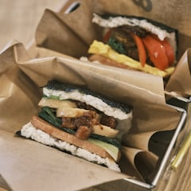
sampleEgg sandwich (tamago sando) + Seven Café iced coffee
💡 Coffee: pay at the register, then press the button for your cup size at the machine.
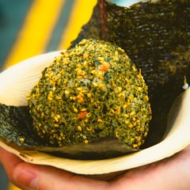
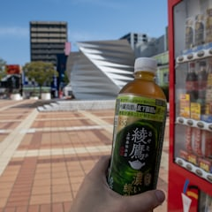
Two onigiri (tuna-mayo + salmon) + a bottle of green tea
💡 Pull tab 1 → 2 → 3 on the wrapper so the seaweed stays crispy.
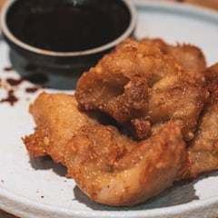
Fried chicken from the hot counter + a cold drink
💡 It's behind the register: point at it or say the name on the label.
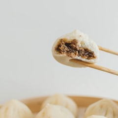
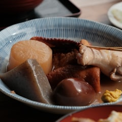
Nikuman (steamed pork bun) + oden (daikon, egg, fish cake)
💡 Oden is mostly sold in colder months. In April, ask if they still have it.
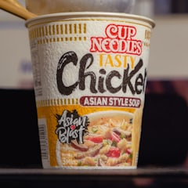
Cup noodle + one onigiri
💡 Hot water is at the counter or near the microwave. Staff can heat food for you.
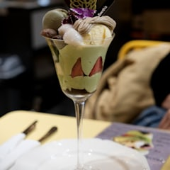
Dessert shelf: puddings, parfaits, mochi and ice cream
💡 Look for the 7-Premium label: it's 7-Eleven's own brand.
Rubbish 101
- Public bins are rare. Carry a small bag for your trash.
- Konbini bins are usually split: burnable (food wrappers, paper), PET bottles (peel off label and cap if there's a slot), cans/glass.
- At the Airbnb, follow the host's sorting rules exactly (usually burnable / plastic / cans / bottles / PET).
- Finish street snacks where you buy them. Eating while walking is frowned upon in many areas.
Daily food allowance
| Breakfast (konbini) | ¥500–¥800 |
| Lunch (ramen, teishoku, gyudon) | ¥900–¥1,500 |
| Dinner (izakaya, sushi train) | ¥1,800–¥3,500 |
| Snacks + drinks | ¥500–¥1,000 |
| Budget / comfortable | ¥4,500 / ¥7,000 a day |
Cheap, reliable chains: Ichiran or Tenya, Sukiya/Matsuya gyudon, Sushiro or Kura sushi trains, Saizeriya, CoCo Ichibanya curry.
Pasalubong & Don Quijote
Tap any item to see more photos of the real packaging. Photos marked sample show the type of product, not the exact brand.
Pasalubong
Supermarket = cheaperOK Store, Life, Seiyu, Aeon, Gyomu Super usually beat tourist shops. Supermarkets near the house ↗
OS Drug Ueno
Apr 14Cheap drugstore locals use, inside Ameyoko. Cash only, no tax refund, opens 10 AM, crowded so go early. 6-11-5 Ueno ↗
Real product photos: Open Beauty Facts contributors (CC BY-SA). Items marked sample have no free real photo yet (Unsplash: Evangeline Sarney, Hanna, Rosa Rafael, MANITO SILK).
Don Quijote
Apr 16Landing at Narita T2, 08:10 AM
🏡 Airport → our house, step by step
Follow the numbers. About 1½ hours in total. Walking photos are from our Airbnb host.
Our flight 5J 5062 lands at Narita Terminal 2. Show your Visit Japan Web QR at immigration and customs, then get your bags.
Switch on your eSIM. Withdraw yen at a 7-Eleven / JP Post ATM. If the ATM asks to "convert to PHP", press NO.
Follow the signs "Railways / 鉄道" to Airport Terminal 2·3 Station in the basement of Terminal 2. No bus or shuttle needed.
Look for 京成 Keisei. Tap your Suica at the Keisei gate. Ride any Keisei train that stops at Aoto (青砥): the Access Express or the Keisei Main Line Limited Express. Both are normal seats, no reservation, ≈40–60 min.
JR / N'EX (wrong company, goes elsewhere). Skyliner only if you want reserved seats: it needs an extra ticket (≈¥2,200 to Aoto) and only some Skyliners stop at Aoto.
Get off at Aoto. Take a train toward Keisei Ueno (京成上野) that stops at every station: Local / 普通. Check the screen says it stops at Horikiri-Shobuen.
Just 2 stops from Aoto: Aoto → Ohanajaya (お花茶屋) → Horikiri-Shobuen. Total fare ≈¥1,100–1,300 each.
Tap your Suica and walk out. The house is about 6 minutes on foot.
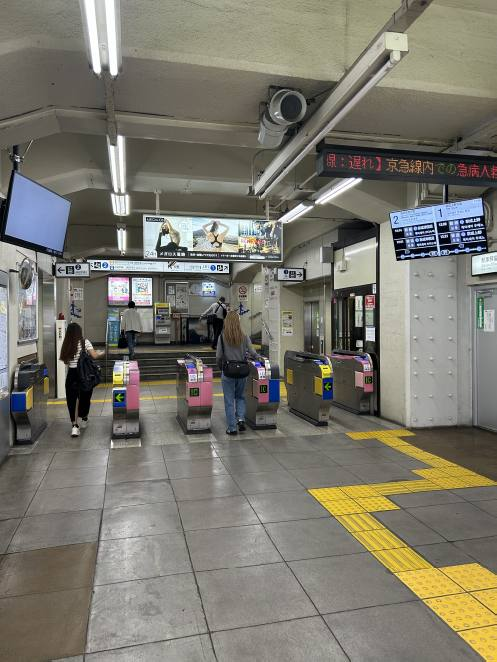
Walk forward, then turn left to the exit with the yellow sign 出口 South 南.
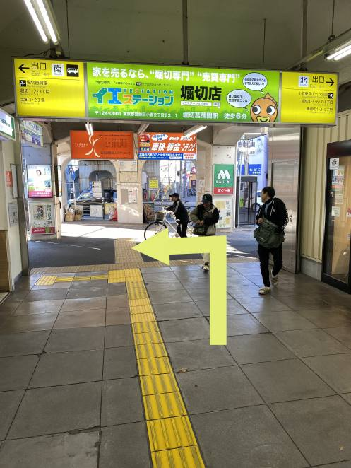
Walk left along the street, past 生鮮市場 あさひ (green sign) with the とみちゃん pig sign above.
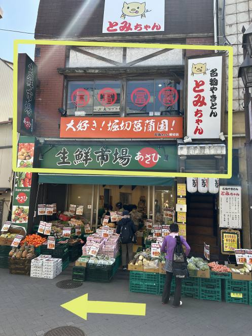
Go straight past Chiyoda Sushi (ちよだ鮨), the red sign on your right.
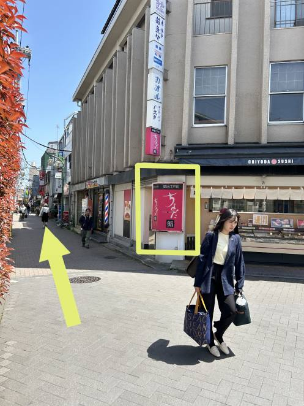
At the wooden shop さいとう (on your right), turn left.
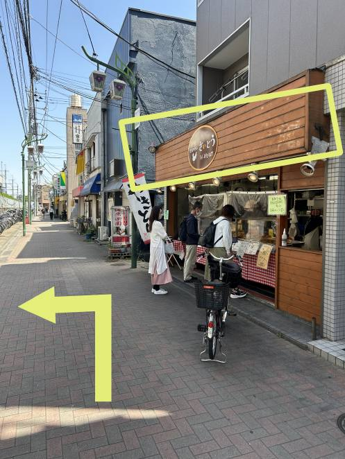
Pass the house with the orange rope on the tree and keep going straight.
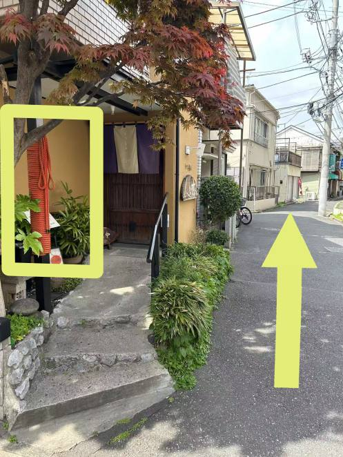
See the green awning "Bar Solomon"? Turn left there.
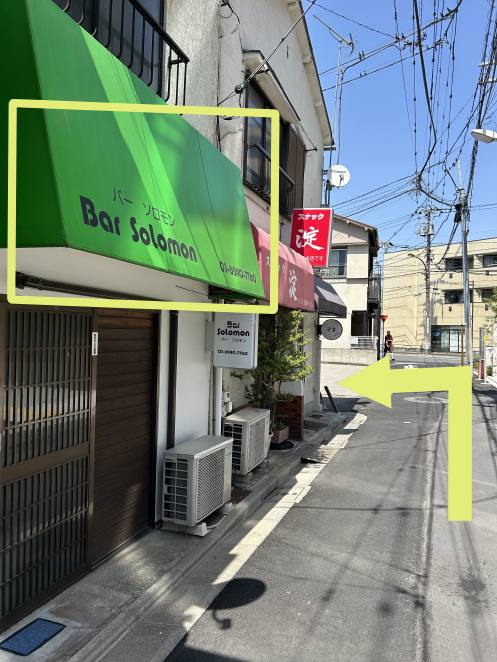
Look for the green "Welcome" mat and the bicycles, and the wooden Dragon Inn Tokyo sign. Door instructions come from the host in the Airbnb app.
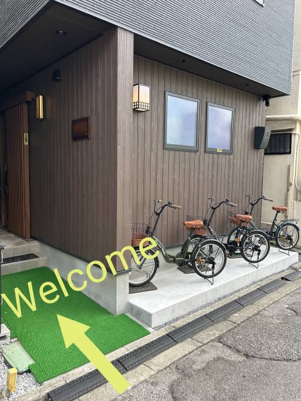
🧳 Too tired or too many bags? A pre-booked van for 6 (Klook) goes door to door. See vans ↗
Links to do before we land
Android: add a regular Suica/PASMO in Google Wallet if your phone supports it, or buy a Welcome Suica card at the station.
🧾 Other ways to get there (Skyliner, bus, van) + arrival tips
- Immigration + customs: show your Visit Japan Web QR. Narita has joint kiosks that do both in one scan. Paper cards still work.
- Bags: collect luggage, stay together, count six.
- Data: turn on the eSIM you installed at home. Test Google Maps before leaving the hall.
- Cash: 7-Eleven (Seven Bank) and JP Post ATMs accept most foreign cards. If the screen offers to "convert to PHP", decline and choose yen. Your PH bank may add its own fee.
- Transport card: Suica/PASMO on iPhone, or a Welcome Suica. Load ¥3,000 to start.
- Ride: Keisei train (plan above). We'll likely reach Tokyo around 10:30–11:00, before check-in (3–4 PM). Drop bags with the host if allowed, or use station coin lockers.
Starting cash: ¥30,000 per person on arrival. The rest can go on card or Suica. It's not an extra cost: it's already inside the food and transport lines.
| Option | Time | Per person | Group of 6 |
|---|---|---|---|
| Keisei Access Express / through train to Asakusa or Aoto. Often no transfer, regular seats, little luggage space | ≈ 45–65 min | ≈ ¥1,300–1,500 (estimate) | ≈ ¥8,400 |
| Skyliner to Ueno, then taxi or local train. Reserved seats + luggage space | ≈ 45–60 min | ≈ ¥2,600 + taxi share | ≈ ¥16,000+ |
| Airport bus to Tokyo Station (TYO-NRT ¥1,500) or Limousine bus (≈¥3,100–3,600), then taxi | ≈ 75–120 min | ¥1,500–3,600 + taxi share | ≈ ¥12,000–24,000 |
| Private van (pre-booked, door to door, big bags OK) | ≈ 60–90 min | quote needed | quote needed |
Final walk from the station: 1–10 min depending on the home (see each card).
Going home on Apr 21: the early start
Flight 5J 5063 leaves Narita T2 at 08:55. Check-in counters close at 08:10. Because of the new tax-refund customs check (see below), aim to arrive about 6:00 AM. From east Tokyo that means leaving around 4:45–5:00 AM.
- Option 1: first Keisei/Access Express trains from near the home. Check the first departure times for our station before booking. To verify
- Option 2: pre-booked van for 6 with luggage (most relaxed). Get 2–3 quotes. To book
- Option 3: spend the last night (Apr 20) at a Narita airport-area hotel. Shuttle to T2, but it's one more move. Suggested backup
Another reason the east-Tokyo homes help: they're 45–60 min closer to Narita by direct train than Shinjuku.
Tax refund at Narita (new system from Nov 2026)
- In stores we pay the full price incl. 10% tax. Spend ¥5,000+ (before tax) at the same store on the same day, show your physical passport, and register the refund the way the store explains.
- Keep every receipt and don't use or eat the tax-free items. Pack them in your carry-on.
- At Narita, go to the customs tax-refund check before check-in. Customs checks receipt by receipt; one missing item can cancel the refund for that receipt.
- Refund arrives later: about 1–2 weeks to a credit card, longer by bank transfer.
Don Quijote waived its refund handling fee under the new system. Sources: Japan Tourism Agency, GO TOKYO, Tokyo Cheapo, fun-japan.
What we still need to decide
Updated Nov 13, 2026. Tell Mabs your answer and she'll update this page.
First trains, a pre-booked van for 6, or sleep near the airport on Apr 20? We need to be at Narita by about 6:00 AM.
Still undecided. Who wants to go on Apr 15–16? If any of us go, pick a hotel on the Kyoto page and book the Shinkansen.
Can we drop bags early on Apr 13 (we arrive ≈10:30 AM)? Is a 4:45 AM self check-out OK on Apr 21?
Book a private van for 6 with our loop (Lawson → Chureito → Honcho → udon lunch → Yamanaka → Dream Bridge)? Or the cheaper shared bus tour (no Yamanaka, set order).
Book the GALA Yuzawa package + Shinkansen seats, and agree on the go / no-go rule if there's no snow.
Their ticket shows Apr 21. If they're staying until Apr 22, confirm the flight and book their own place for the night of Apr 21.
Agree with Eman, Sharol and Dunn Lee & Jane when and how they'll pay their share of the stay and tickets.
Ask Attic in early December how much their service fee is, then update the Visa page and Budget.
Pick a provider and coverage level. Buy in March 2027 with baggage and travel tax.
Already decided ✅
Cebu ⇄ Narita, paid ✓
Booked ✓ · 2 full bathrooms with showers, house has stairs (host confirmed)
B1 Mabelle & Brian · B2 Sharol · B3 Eman (loft) · B4 Dunn Lee & Jane
All valid ✓
Group goes with Attic Tours (Brian doesn't need a visa)
Ichiran ramen in Ueno
Where this came from
All checked Nov 11, 2026. Verified facts = official/primary pages. Current quotes = live Airbnb search results for our exact dates (not held, can change). Planning estimates and sample content are labeled where they appear. Illustrations are drawn for this page; no photos of real listings are shown. Open each listing link for its real photos.
- Embassy of Japan in PH, Visa/Consular Services (visa gratis, Visa Center, 3-month validity, several weeks processing): ph.emb-japan.go.jp
- VFS Global Japan–Philippines info (₱520 service fee; Philippines "Gratis"): vfsglobal.com · Embassy/VFS requirement PDFs: checklist PDF
- MOFA JAPAN eVISA (Filipinos: packaged tours only): mofa.go.jp
- Attic Tours official site: attictours.asia · Branch list (JCB promo page, Aug–Dec 2026): specialoffers.jcb
- eTravel (free, 72-hour window): etravel.gov.ph FAQ
- Philippine travel tax ₱1,620 economy (still in force; abolition bills pending): TIEZA, status check Aug 2026
- Japan International Tourist Tax ¥3,000 from July 1, 2026 (in ticket): Japan Tourism Agency PDF
- Tokyo lodging tax 3% from April 1, 2027, threshold ¥13,000, includes minpaku: Travel Watch
- Visit Japan Web: vjw.digital.go.jp
- Keisei Narita–Aoto/Horikiri-Shobuen route and fares: Keisei fares, Skyliner FAQ · Welcome Suica Mobile: JR East
- N'EX fares (¥3,330 Narita–Shinjuku; ¥5,200 round trip): JR East
- Shinjuku–Kawaguchiko bus ¥2,200: JNTO TIC timetable PDF; Fuji Excursion ¥4,130: GLTJP
- GALA Yuzawa: official winter site gala.co.jp; spring 2026 park/area notice news; 2026–27 dates as reported todolist-japan; 2026 early season end KKday notice; last-season prices guide
- Fuji Shibazakura Festival 2026 dates: japan-guide
- Exchange rate: exchange-rates.org
- Snack & product photos (Wikimedia Commons): KitKat Matcha by Raimond Spekking (CC BY-SA 4.0); Bourbon Alfort by Quercus acuta (CC0); Tokyo Milk Cheese Factory shop by Wide Awake! (CC BY 4.0); Yoku Moku Cigare by Kentin (CC BY-SA 3.0); Jagarico by 毒島みるく (CC0); Pocky by Evan-Amos (CC BY-SA 3.0); Hi-Chew by EnzoTC (CC BY-SA 4.0); Meiji milk chocolate by choo chin nian (CC BY-SA 2.0); Black Thunder by FlipTable (public domain); V-Rohto by 勇者プクリン (CC BY 3.0); Salonpas by AddisWang (CC BY-SA 3.0). Photos resized/cropped. "Sample" skincare and hair photos: Unsplash.
- 3D icons: Microsoft Fluent Emoji (MIT License).
- Itinerary place photos, 7-Eleven food photos and the Yoshida udon (@oura), omurice (@okuyama_leo), tonkatsu (Zhang Ziyu), kimono (HONG FENG), okonomiyaki (Daniel Hooper), unagi (Richard Iwaki), Jukken Bridge (Wenhao Ruan), Skytree (Hakan Nural), Harry Potter studio set (Korng Sok), Don Quijote (MAK), claw machines (Vinh Nguyen) and karaoke (Ejmin Matevousian), gyoza (Mikey Frost), sumo (Bob Fisher), Hoppy Street (ayumi kubo), yakiniku (Prastika Herlianti), Omoide Yokocho (Pema G. Lama), Miyashita Park (Intrepid), Tokyo Tower spots (Se. Tsuchiya, Tsuyoshi Kozu, Andrea De Santis), Tokyo Metropolitan Government Building (Sebastian Herrmann, Gilly), batting cage (kaleb tapp) photos, Bic Camera AKIBA (Tokumeigakarinoaoshima, Wikimedia Commons, CC BY-SA 4.0): Unsplash (Unsplash License). They show the place or type of food, not always the exact shop or item.
- Walking photos from Horikiri-Shobuen Station to the house: provided by our Airbnb host (Dragon Inn Tokyo).
- Photos (Unsplash License, free to use): Manuel Cosentino (Chureito/Fuji), Joshua Tan (Kawaguchiko), PJH (Fuji Lawson), Nicholas Doherty (Asakusa), Pat Krupa (Akihabara), Jezael Melgoza (Shibuya), Elton Sa (Harajuku), Ryoji Iwata (Skytree), Michael Wu (market), Pema G. Lama (Ginza, Shinjuku), Koukichi Takahashi (Ueno), Josh Soto (Tokyo), Brendan Beale (snow, illustrative), Crystal Jo (ramen), Frank Huang (konbini), David (airport). Photos show places, not our booked homes.
- Airbnb listings: links on each card (searched Nov 11, 2026, exact dates and 6 adults).